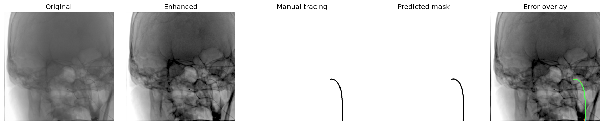
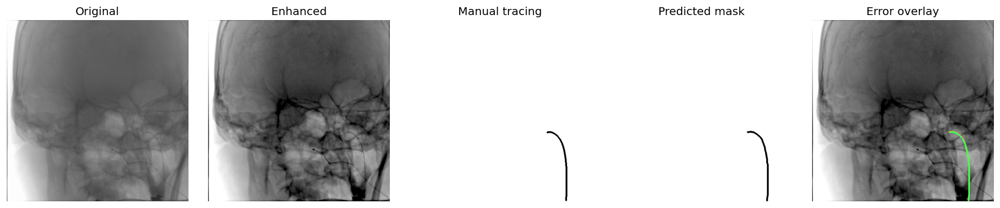
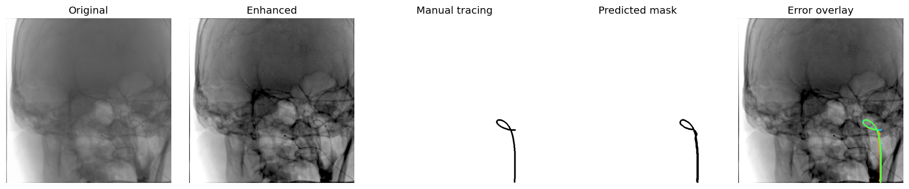
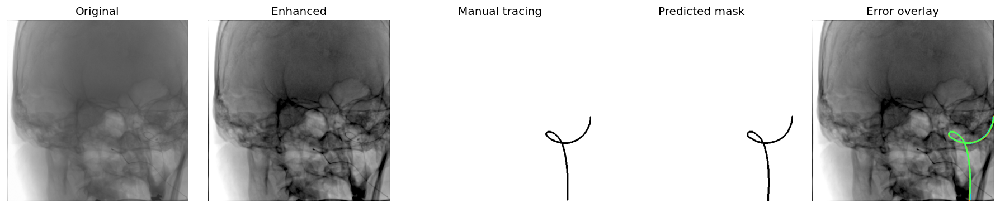
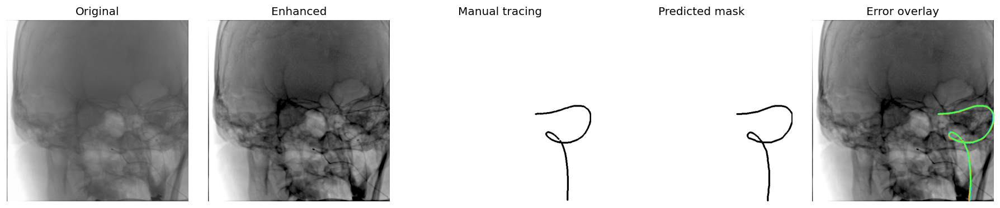
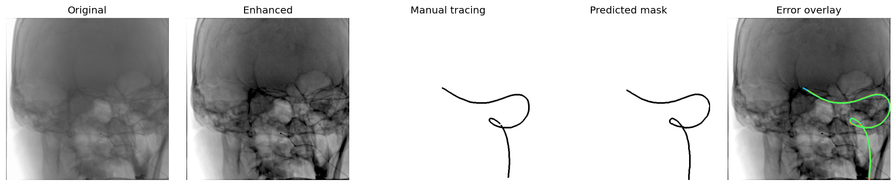
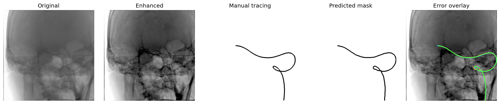
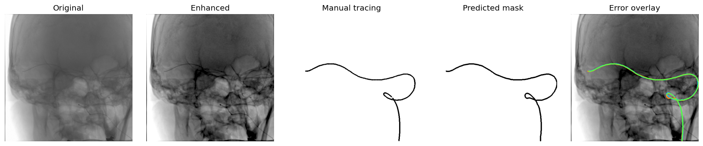

Project by Denos Kume and Oluwole Shokunbi
Teaching acquisition · Offline research · Reader worksheet
Compare the original and enhanced images with the tracing and prediction. Green marks agreement on tool pixels, orange marks false positives and blue marks missed tools. Record observations below each frame and export the worksheet to keep a portable copy.

Dice 0.932 · Missed 63 pixels · False positives 86 pixels

Dice 0.932 · Missed 55 pixels · False positives 94 pixels

Dice 0.818 · Missed 118 pixels · False positives 444 pixels

Dice 0.889 · Missed 202 pixels · False positives 221 pixels
Dice 0.883 · Missed 222 pixels · False positives 271 pixels

Dice 0.847 · Missed 391 pixels · False positives 435 pixels

Dice 0.884 · Missed 380 pixels · False positives 384 pixels

Dice 0.878 · Missed 409 pixels · False positives 480 pixels
Dice 0.908 · Missed 320 pixels · False positives 413 pixels

Dice 0.849 · Missed 414 pixels · False positives 811 pixels